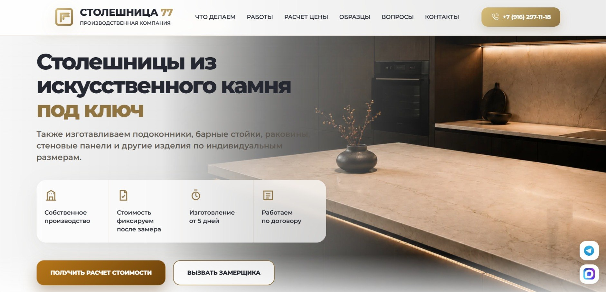

Как сайт стал приносить на 83% больше обращений при трафике на 48% меньше
Кейс компании, которая производит изделия из искусственного камня на заказ.

Результат
После маркетинговой переработки сайта:
- обращений стало на 83% больше;
- конверсия посетителей в обращения выросла примерно в 3,5 раза;
- заявок, взятых в работу, стало в 4 раза больше.
И все это при трафике на 48% меньше.
Для оценки результата мы сравнили два одинаковых по длительности периода: месяц работы сайта до переработки и месяц после запуска обновленной версии.
Задача
Клиент обратился с сайтом, на который уже шел трафик из поиска и Яндекс Директа. Внешне сайт выглядел современно, но практически не приносил обращений.
Запрос клиента:
«Хотелось бы доработать и наполнить сайт с точки зрения маркетинга. Задача была увеличить заявки, продажи и сделать так, чтобы сайт работал, а не просто был».
Я взяла проект целиком: провела маркетинговый анализ сайта и поведения пользователей, разработала новую логику страницы, самостоятельно внедрила изменения на WordPress и настроила измерение результата.
На сайте было почти все. Но это почти не работало
Калькулятор, цены, формы, портфолио, преимущества и призывы к действию уже присутствовали на странице.
При поверхностной проверке сайт мог выглядеть вполне правильным. Но продающий сайт определяется не количеством обязательных элементов.
Важно, какую функцию выполняет каждый из них, насколько он соответствует намерению посетителя и помогает ли перейти к следующему действию.
По данным Вебвизора пользователи изучали работы, цены и материалы, возвращались к ключевым разделам, начинали взаимодействовать с расчетом, но часто не доходили до обращения.
Интерес был. Работающего пути от интереса к заявке не было.
Именно такие неочевидные разрывы я искала в процессе анализа.
Один из примеров: калькулятор
Два калькулятора могут выглядеть почти одинаково: похожие вопросы, кнопки и оформление.
При этом один поддерживает намерение пользователя и приводит его к заявке. Второй просто присутствует на странице и добавляет еще одно действие без понятного результата.
Разница часто не в дизайне и даже не в количестве вопросов. Она в том, что происходит с намерением человека на каждом шаге.
Почему внешне похожие калькуляторы дают совершенно разный результат, я разберу в следующем материале.
От анализа к рабочему решению
Я сопоставила поведение пользователей, особенности продукта, характер входящего трафика и логику принятия решения.
Это позволило увидеть не набор отдельных недостатков, а причины, по которым посетители интересовались предложением, но не завершали обращение.
После анализа я пересобрала главную страницу как единый сценарий. Ключевые элементы сайта начали работать вместе и последовательно вести человека к заявке.
Все изменения я внедрила на WordPress. После запуска настроила цели в Яндекс Метрике, а вместе с заказчиком организовала учет фактических обращений и их статусов.
Результат оценивали по итогам двух равных месячных периодов до и после переработки. Данные Метрики сопоставили с таблицей заказчика, чтобы учитывать не только зафиксированные действия на сайте, но и обращения, которые действительно поступили в компанию.
Что получилось
При трафике на 48% меньше обновленный сайт принес на 83% больше обращений.
Конверсия посетителей в обращения выросла примерно в 3,5 раза.
Количество заявок, которые заказчик взял в работу, увеличилось в 4 раза.
Результат был получен не за счет дополнительного трафика. Сайт стал значительно эффективнее работать с уже существующим спросом.
Из отзыва заказчика
«Сайт стал не просто приятным, но и рабочим: заявки, звонки, всё заработало. Результат был прям как небо и земля».
Трафик уже привлечен. Важно не растерять его по дороге к заявке
В этом проекте точка роста находилась не в увеличении рекламного бюджета и не в очередном редизайне. Она была внутри пути клиента на сайте.
Моя работа в том, чтобы видеть разницу между элементом, который просто присутствует на странице, и решением, которое действительно помогает человеку двигаться к обращению.
Затем превратить результаты анализа в конкретные изменения, самостоятельно внедрить их и проверить эффект по цифрам.
Если люди уже приходят на ваш сайт, но отдача от трафика вас не устраивает, покажите его мне. Посмотрим, где теряются обращения и какая точка роста уже находится внутри сайта.